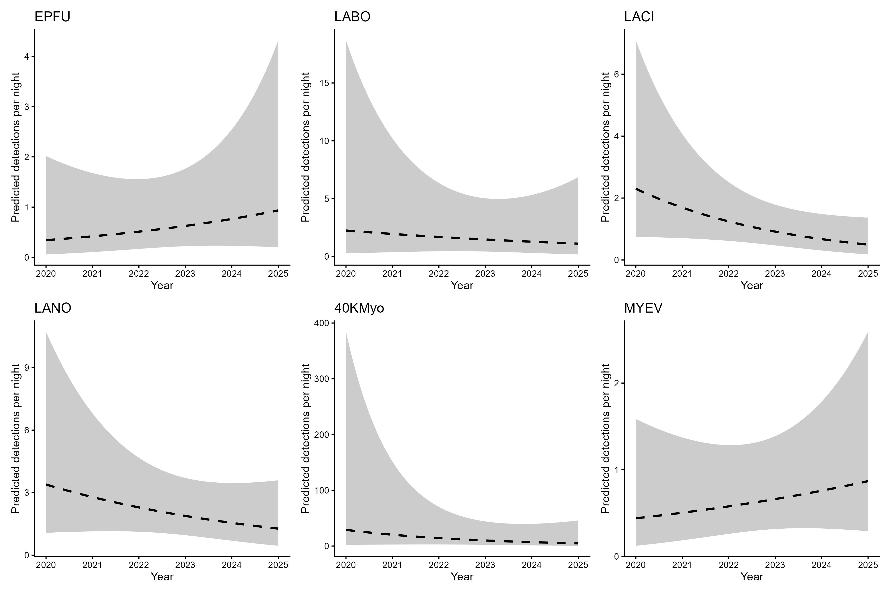

Land Acknowledgement
Biodiversity Pathways respectfully acknowledges that our work takes place on the territories of Treaties 6, 7, 8, and the Métis homeland, traditional and ancestral lands of First Nations and Métis Peoples, whose histories, languages, and cultures are directly linked to the biodiversity that we monitor.
We acknowledge the traditional teachings of the lands that we work on, and that reciprocal, meaningful, and respectful relationships with Indigenous peoples make our work possible. We are deeply grateful for their stewardship of these lands, and we are committed to supporting Indigenous-led monitoring programs, while learning Indigenous ways of knowing, being, and doing.
Introduction
Overview of NABat and the NNW Bat Hub
North American Bat Monitoring Program (NABat) is a large-scale coordinated effort to monitor bat species to address gaps in knowledge and lack of long-term studies across North America (Loeb et al. 2015).The program is administered by the US Geological Survey (USGS) and implemented by the North by Northwest Bat (NNW) Hub in Alberta, British Columbia, and S.E Alaska.
NNW Bat Hub was established in 2024 with collaboration from Government of Alberta, Government of British Columbia, and Government of Alaska. The hub was formed by combining the previous Alberta Hub and the BC and southeast Alaska Hub. The implementation of the program within Alberta has key support from Parks Canada, government of Alberta staff, other wildlife biologists, Indigenous Nations, community members and naturalists across the province.
NABat Monitoring in Banff National Park
Banff National Park has been conducting NABat monitoring within one NABat grid cell (Grid Cell ID: 148842) since 2020. Monitoring efforts include three long-term stationary sites and a driving transect. In addition, 10 supplementary sites were surveyed in 2022 and 2023 to develop a bat species inventory for the park. All data from 2020 to 2023 were processed using automated identification software. In 2024 and 2025 a subset of the data were also manually verified following the established NABat protocols ((Reichert et al. 2018a)).
Threats to bat populations in Alberta
Bat populations in Alberta face a wide range of threats including forestry practices, anthropogenic expansion, and climate change among others. Of these threats, White-Nose Syndrome and wind energy development have emerged as two of the highest-priority concerns.
White-Nose Syndrome
White-Nose Syndrome (WNS) is a deadly fungal disease caused by the fungus Pseudogymnoascus destructans (Pd) that affects hibernating bats. As of 2026, WNS has been confirmed in nine Canadian provinces including Alberta ( Figure 1: CWHC-RCSF (2024)). Since Pd was first confirmed in AB in 2022, the fungus and the ensuing disease have spread through the province at a rapid pase and has now been detected at the provinces largest known hibernacula, Cadamun cave (Wilkinson, pers. comm.) Continued monitoring of populations in AB is critical as Pd and WNS continue to spread throughout the province.

Wind Energy Development
Wind energy farms have been linked to high mortality rates across all bat species in Canada, with long distance migratory species accounting for 73% of recorded fatalities (Zimmerling and Francis 2016). In Alberta alone, one estimate predicts an annual mortality rate 10.9 bats per turbine (Zimmerling and Francis 2016). There are currently 1,778 turbines active in the province across 49 different projects with the most turbines found in the grassland ecosystem (“Canadian Wind Turbine Database” (2025) ; Figure 2). Using Zimmerling and Francis (2016) estimate, Alberta is estimated to be loosing 19,380 bats per year to wind turbine collisions. As of 2023, COSEWIC designated all three of Alberta’s long distance migratory species as endangered due in part to fatalities at wind turbine facilities (Status of Endangered Wildlife in Canada 2023).

Acoustic Monitoring of Bats
Acoustic recording is a cost-effective method for monitoring bat populations across large geographic and temporal scales. However, several limitations affect the conclusions that can be drawn from these data:
Imperfect species identification — Bats rely on echolocation for hunting and moving around, and species with similar ecology and physiology often produce overlapping calls. While detectors are deployed to maximize recordings of diagnostic Search Phase calls, species identifiability will always vary depending on the local species assemblage.
Variable detectability — Bat species are not equally detectable acoustically. Larger, wide-ranging species produce louder calls that travel farther, while smaller species with quieter calls or specialized habitat use are less reliably recorded. As a result, trend estimates cannot be produced for all species using acoustic methods alone.
Data variability — Many factors influence recording quality and bat activity, including wind speed, humidity, and local habitat. Additionally, stationary detectors cannot account for individual recapture, meaning acoustic data can only inform relative activity and occupancy.
Processing limitations — Auto-ID software enables efficient processing of large datasets but has known high misclassification rates for bats, making manual verification necessary to ensure accurate results.
Methods
2025 Deployments
Stationary Surveys
Banff biologists deployed three stationary bat detectors in strategically selected bat habitat in 3 distinct quadrants within the NABat grid cell (?@fig-sites). Stationary sites were deployed from June 24 until July 3, 2025. Deployment set up followed the standards set by Loeb et al. (2015).
Transect Surveys
The driving transect protocol closely follows that established by Loeb et al. (2015). Two replicates of a mobile transect are driven at 30 – 35km/h with a bat detector on the roof to record bats along the road. Transects are conducted on the nights of June 24 and July 1 2025 ( ?@fig-sites).
Manual Verification
All recordings were classified using Kaleidoscope’s Bats of North America 5.4.0 or newer classifier. These automatic classifiers were used to assign species identifications and exclude non-bat recordings. Manual verification only occurred in 2024 and 2025 following the processing standards established by the North American Bat Monitoring Program (NABat) (Reichert et al. 2018b). Only recordings assigned a species classification by either Kaleidoscope or Sonobat were selected for manual verification. For stationary acoustic monitoring, recordings were manually vetted until at least one recording per species per site per night was confidently identified. For mobile transects, all recordings with automated species classifications were manually vetted. Species identifications were validated against reference call parameters described by Slough et al. (2022), Solick (2022), and Szewczak (2018), adhering to NABat manual vetting standards (Reichert et al. 2018b).
Based on documented species ranges and prior detection data (Olson, n.d.), manual identification efforts focused on seven species: Big Brown Bats (Eptesicus fuscus), Eastern Red Bats (Lasiurus borealis), Silver-haired Bats (Lasionycteris noctivagans), Hoary Bat (Lasiurus cinereus), Little Brown Bats (Myotis lucifugus), Long-legged Myotis (Myotis volans) and Long-eared Myotis (Myotis evotis).
Trends estimates used only autoID results unless the manual verification results indicated a bat recordings was actually noise. This was done to maintain consistency across the 6 years of study, since manual verification only started in 2024.
All the recordings and results can be found on Widltrax under the Banff National Park Organization, in the project called Bat Community - Long Term Monitoring - NABat - 2020-2025.
Statistical Analysis
Species Summary
Species presence and nightly activity were calculated from a site-night-species table constructed for all sampled nights. Sampling effort was defined as each unique site-night with acoustic recordings. Mean nightly passes included all recordings with species or couplet labels, with couplets split and counted toward both species.
Covariates
Weather covariates were summarized for each sampling night and included mean temperature, mean relative humidity, total precipitation, and mean wind speed. Moon covariates were calculated for each site-night and included moon illumination and an indicator of moon position. Environmental covariates were standardized prior to modeling to aid convergence and comparability; the year term was left on its original scale so that trend estimates represent per-year change.
Covariate selection was done based on ranked AICc
Statistical trends
Trend analyses were conducted for six taxa: Big Brown Bat (Eptesicus fuscus, EPFU), Eastern Red Bat (Lasiurus borealis, LABO), Hoary Bat (Lasiurus cinereus, LACI), Silver-haired Bat (Lasionycteris noctivagans, LANO), Long-eared Myotis (Myotis evotis, MYEV), and a 40 kHz Myotis complex (40KMyo), the last comprising M. lucifugus, M. volans, and M. septentrionalis summed within each site-night prior to modelling. Only data from stationary acoustics were included in the models. No models were done on driving transects to asses abundance due to the low number of calls. To assess abundance you need a much higher number of sites and transects.
Nightly bat activity was modeled with negative binomial generalized linear mixed models (GLMMs) with a log link fitted in glmmTMB (Version 1.1.12). Each model included a random intercept for site-year deployment (1 | site:year). This term was used in preference to a site-only intercept because nights within a deployment share a common detector, placement, configuration, and weather window, and are therefore not independent replicates of a year.
Fixed effects comprised a linear year term (years since 2020), a two-level detector-unit term (Wildlife Acoustics SM4 vs. Titley Anabat Swift; Swift as reference): there were 2 different units used across the sampling site and this was to account for potentail differences in detections due to, and a set of environmental covariates selected per taxon.
Results
Acoustic monitoring happened for a total of 187 detector nights across 3 stationary survey locations and 11 driving transects over six years (2020–2025) (Table 1). Survey effort was mostly even within sites and years with sites sampled for a mean of 13.4 nights per year (range: 9–18 nights per site-year). A total of 39706 bat detections were recorded across the three stationary sites and a total of 475 where collected during driving transects in the Banff NABat grid cell.
Species detected and mean nightly activity
Eight species were recorded across the study. Silver-haired bat (Lasionycteris noctivagans) and Little Brown Bat (Myotis lucifugus) were detected across every site and year. Northern myotis (Myotis septentrionalis) was by far the scarcest species, detected only at Fenlands in 2022 and 2024, and Golf Course in 2023 and 2024 (Table 1). The Little Brown Bat had the highest number of detections across all years (20354 ; nightly mean = 102.7979798). This was followed by Long-legged Myotis (2457 ; nightly mean = 12.4090909), and Eastern Red Bat (1348 ; nightly mean = 6.8080808).
| Year | Site | Nights | Mean Nightly Bat Recordings ± SD | EPFU | LABO | LACI | LANO | MYEV | MYLU | MYSE | MYVO |
|---|---|---|---|---|---|---|---|---|---|---|---|
| 2020 | Fenlands | 18 | 124.0 ± 146.1 | X | X | X | X | X | X | X | |
| 2021 | Fenlands | 16 | 236.2 ± 330.7 | X | X | X | X | X | X | X | |
| 2021 | Golf Course | 15 | 506.3 ± 201.5 | X | X | X | X | X | X | X | |
| 2021 | Upper Hotsprings | 17 | 7.4 ± 9.8 | X | X | X | X | X | X | X | |
| 2022 | Fenlands | 14 | 334.9 ± 298.6 | X | X | X | X | X | X | X | X |
| 2022 | Upper Hotsprings | 14 | 2.5 ± 2.6 | X | X | X | X | ||||
| 2023 | Golf Course | 14 | 452.9 ± 246.5 | X | X | X | X | X | X | X | X |
| 2023 | Upper Hotsprings | 14 | 5.4 ± 8.4 | X | X | X | X | X | X | X | |
| 2024 | Fenlands | 13 | 724.8 ± 468.4 | X | X | X | X | X | X | X | X |
| 2024 | Golf Course | 13 | 375.6 ± 178.4 | X | X | X | X | X | X | X | X |
| 2024 | Upper Hotsprings | 12 | 4.5 ± 6.0 | X | X | X | X | X | X | ||
| 2025 | Fenlands | 9 | 34.6 ± 14.0 | X | X | X | X | X | X | X | |
| 2025 | Golf Course | 9 | 14.2 ± 8.3 | X | X | X | X | X | X | X | |
| 2025 | Upper Hotsprings | 9 | 4.1 ± 1.8 | X | X | X | X | X | X | ||
| 2021 | DrivingTransect | 1 | 36.0 ± NA | X | X | X | X | X | |||
| 2022 | DrivingTransect | 3 | 57.7 ± 13.2 | X | X | X | X | X | |||
| 2023 | DrivingTransect | 2 | 46.0 ± 7.1 | X | X | X | X | X | |||
| 2024 | DrivingTransect | 3 | 12.7 ± 0.6 | X | X | X | X | X | X | ||
| 2025 | DrivingTransect | 2 | 68.0 ± 8.5 | X | X | X | X | X | X |
Species Trends
Models converged for six species/groups: Big Brown Bat (EPFU), Eastern Red Bat (LABO), Hoary Bat (LACI), Silver-haired Bat (LANO), Long-eared Myotis (MYEV) and the combined 40kHz Myotis group (40KMyo) (Figure 4).
| Species | Covariates Used | Trend Estimate ± 95% CI | p-value |
|---|---|---|---|
| EPFU | Nightly Mean Temperature + Nightly Mean Relative Humidity | 0.201 ± 0.514 | 0.444 |
| LABO | Nightly Mean Temperature + Nightly Mean Relative Humidity | -0.141 ± 0.616 | 0.655 |
| LACI | Nightly Mean Temperature + Nightly Precipitation + Moon Illumination Fraction | -0.307 ± 0.336 | 0.074 |
| LANO | Nightly Mean Relative Humidity + Nightly Mean Wind Speed + Moon Above Horizon at Midnight (binary) | -0.196 ± 0.346 | 0.267 |
| 40KMyo | Nightly Mean Relative Humidity | -0.355 ± 0.760 | 0.359 |
| MYEV | Nightly Precipitation + Moon Illumination Fraction + Nightly Mean Wind Speed + Nightly Mean Temperature | 0.136 ± 0.372 | 0.472 |

Discussion
Data used for trends only uses autoID from Kaleidoscope, which has been shown to confuse Myotis spp. for LABO. so be careful here.
Results must be taken with caution because of small sample size, but overall can conclude that bat species at the grid cell are stable. LACI was almost significatna dn showed a decline, this means that close inspection should be followed here. This is no suprise seeing the increasing wind turbine development in the province and elsewhere.
How does this compare to the NABat abundance results for LABO, LACI and LANO in the whole region?
Keep in mind that in the winter of 2026 WNS has been confirmed across the Rockies and most importantly in Cadamun cave. This just points to the importance of continues monitoring in the region. This will likely be important to keep in mind and will mean the decrease of MYLU and MYSE
Acknowledgements
Appendix A
Species codes and their definitions
CommonName | ScientificName | Code | Definition |
|---|---|---|---|
Big Brown Bat | Eptesicus fuscus | EPFU | Calls that have diagnostic features identifying it as Eptesicus fuscus |
Big Brown Bat / Silver-haired Bat | Eptesicus fuscus / Lasionycteris noctivagans | EPFULANO | Calls that could be attributed to either Eptesicus fuscus or Lasionycteris noctivagans |
Eastern Red Bat | Lasiurus borealis | LABO | Calls that have diagnostic features identifying it as Lasiurus borealis |
Eastern Red Bat / Little Brown Myotis | Lasiurus borealis / Myotis lucifugus | LABOMYLU | Calls that could be attributed to either Lasiurus borealis or Myotis lucifugus |
Hoary Bat | Lasiurus cinereus | LACI | Calls that have diagnostic features identifying it as Lasiurus cinereus |
Hoary Bat / Silver-haired Bat | Lasiurus cinereus / Lasionycteris noctivagans | LACILANO | Calls that could be attributed to either Lasiurus cinereus or Lasionycteris noctivagans |
Silver-haired Bat | Lasionycteris noctivagans | LANO | Calls that have diagnostic features identifying it as Lasionycteris noctivagans |
Little Brown Myotis | Myotis lucifugus | MYLU | Calls that have diagnostic features identifying it as Myotis lucifugus |
Little Brown Myotis / Northern Myotis | Myotis lucifugus / Myotis septentrionalis | MYLUMYSE | Calls that could be attributed to either Myotis lucifugus or Myotis septentrionalis |
Northern Myotis | Myotis septentrionalis | MYSE | Calls that have diagnostic features identifying it as Myotis septentrionalis |
40kHz Frequency Myotis | 40kMyo | Various species of Myotis that have a characteristic frequency in the range of 35-40kHz | |
High Frequency Bat | HIGH FREQUENCY | Various species with pulses having a characteristic frequency higher than ~35kHz | |
Low Frequency Bat | LOW FREQUENCY | Various species with pulses having a characteristic frequency lower than ~30kHz | |
Unknown Bat | NoID | Bat calls but no grouping category applies | |
Noise | Noise | No bat recorded |
Literature Cited
“Canadian Wind Turbine Database.” 2025. Natural Resources Canada, November 28. https://search.open.canada.ca/openmap/79fdad93-9025-49ad-ba16-c26d718cc070.
CWHC-RCSF. 2024. “Canadian Wildlife Health Cooperative - Réseau Canadien Pour La Santé de La Faune.” https://www.cwhc-rcsf.ca/white_nose_syndrome_reports_and_maps.php.
Energy and Climate Solutions, Ministry of. 2024. “BC Gov News.” December 9. https://news.gov.bc.ca/releases/2024ECS0048-001643.
Friedenberg, Nicholas A., and Winifred F. Frick. 2021. “Assessing Fatality Minimization for Hoary Bats Amid Continued Wind Energy Development.” Biological Conservation 262 (October): 109309. https://doi.org/10.1016/j.biocon.2021.109309.
Loeb, Susan C., Thomas J. Rodhouse, Laura E. Ellison, et al. 2015. A Plan for the North American Bat Monitoring Program (NABat). SRS-GTR-208. U.S. Department of Agriculture, Forest Service, Southern Research Station. https://doi.org/10.2737/SRS-GTR-208.
Olson, Cory. n.d. “Bat Profiles.” Alberta Community Bat Program. Accessed March 6, 2025. https://www.albertabats.ca/batprofiles/.
Rae, Jason, and Cori L Lausen. 2022. North American Bat Monitoring Program in British Columbia: 2021 Data Summary and Activity Trend Analyses (2016-2021). Wildlife Conservation Society of Canada.
Rae, Jason, and Cori L Lausen. 2024. North American Bat Monitoring Program in British Columbia: 2023 Data Summary and Activity Trend Analyses (2016-2023). Wildlife Conservation Society of Canada.
Reichert, Brian, Cori Lausen, Susan Loeb, et al. 2018a. A Guide to Processing Bat Acoustic Data for the North American Bat Monitoring Program (NABat).
Reichert, Brian, Cori Lausen, Susan Loeb, et al. 2018b. A Guide to Processing Bat Acoustic Data for the North American Bat Monitoring Program (NABat). Open-File Nos. 2018–1068. U.S. Geological Survey.
Slough, Brian, Cori Lausen, Brian Paterson, et al. 2022. “New Records about the Diversity, Distribution, and Seasonal Activity Patterns by Bats in Yukon and Northwestern British Columbia.” Northwestern Naturalist 103 (August): 162–82. https://doi.org/10.1898/NWN21-10.
Solick, Donald. 2022. “Bat Acoustic Species-Pair Matrix Western US/Canada.” https://www.batacousticsurveys.com/_files/ugd/a1e0ca_0ed9c3172b9145e49c50eb7a7712f909.pdf.
Status of Endangered Wildlife in Canada, Committee on the. 2023. “Hoary Bat (Lasiurus Cinereus) Eastern Red Bat (Lasiurus Borealis) Silver-haired Bat (Lasionycteris Noctivagans): COSEWIC Assessment and Status Report 2023.” https://www.canada.ca/en/environment-climate-change/services/species-risk-public-registry/cosewic-assessments-status-reports/hoary-bat-eastern-red-bat-silver-haired-bat-2023.html.
Stratton, Christian, Kathryn M. Irvine, Katharine M. Banner, Wilson J. Wright, Cori Lausen, and Jason Rae. 2022. “Coupling Validation Effort with in Situ Bioacoustic Data Improves Estimating Relative Activity and Occupancy for Multiple Species with Cross‐species Misclassifications.” Methods in Ecology and Evolution 13 (6): 1288–303. https://doi.org/10.1111/2041-210X.13831.
Szewczak, Joe. 2018. Acoustic Features of Western US Bats. Humboldt State University Bat Lab.
USFWS, U. S. Fish and Widlife Service. 2025. “White-Nose Syndrome.” https://www.whitenosesyndrome.org/.
Zimmerling, J. Ryan, and Charles M. Francis. 2016. “Bat Mortality Due to Wind Turbines in Canada.” The Journal of Wildlife Management 80 (8): 1360–69. https://doi.org/10.1002/jwmg.21128.